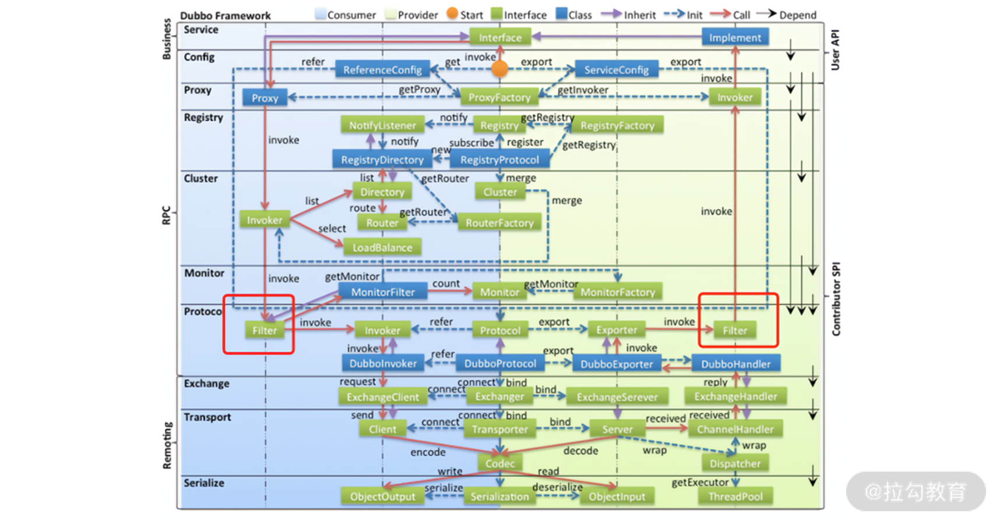
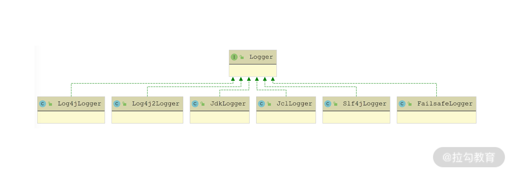

- 00 开篇词 深入掌握 Dubbo 原理与实现，提升你的职场竞争力.md.html
- 01 Dubbo 源码环境搭建：千里之行，始于足下.md.html
- 02 Dubbo 的配置总线：抓住 URL，就理解了半个 Dubbo.md.html
- 03 Dubbo SPI 精析，接口实现两极反转（上）.md.html
- 04 Dubbo SPI 精析，接口实现两极反转（下）.md.html
- 05 海量定时任务，一个时间轮搞定.md.html
- 06 ZooKeeper 与 Curator，求你别用 ZkClient 了（上）.md.html
- 07 ZooKeeper 与 Curator，求你别用 ZkClient 了（下）.md.html
- 08 代理模式与常见实现.md.html
- 09 Netty 入门，用它做网络编程都说好（上）.md.html
- 10 Netty 入门，用它做网络编程都说好（下）.md.html
- 11 简易版 RPC 框架实现（上）.md.html
- 12 简易版 RPC 框架实现（下）.md.html
- 13 本地缓存：降低 ZooKeeper 压力的一个常用手段.md.html
- 14 重试机制是网络操作的基本保证.md.html
- 15 ZooKeeper 注册中心实现，官方推荐注册中心实践.md.html
- 16 Dubbo Serialize 层：多种序列化算法，总有一款适合你.md.html
- 17 Dubbo Remoting 层核心接口分析：这居然是一套兼容所有 NIO 框架的设计？.md.html
- 18 Buffer 缓冲区：我们不生产数据，我们只是数据的搬运工.md.html
- 19 Transporter 层核心实现：编解码与线程模型一文打尽（上）.md.html
- 20 Transporter 层核心实现：编解码与线程模型一文打尽（下）.md.html
- 21 Exchange 层剖析：彻底搞懂 Request-Response 模型（上）.md.html
- 22 Exchange 层剖析：彻底搞懂 Request-Response 模型（下）.md.html
- 23 核心接口介绍，RPC 层骨架梳理.md.html
- 24 从 Protocol 起手，看服务暴露和服务引用的全流程（上）.md.html
- 25 从 Protocol 起手，看服务暴露和服务引用的全流程（下）.md.html
- 26 加餐：直击 Dubbo “心脏”，带你一起探秘 Invoker（上）.md.html
- 27 加餐：直击 Dubbo “心脏”，带你一起探秘 Invoker（下）.md.html
- 28 复杂问题简单化，代理帮你隐藏了多少底层细节？.md.html
- 29 加餐：HTTP 协议 + JSON-RPC，Dubbo 跨语言就是如此简单.md.html
- 30 Filter 接口，扩展 Dubbo 框架的常用手段指北.md.html
- 31 加餐：深潜 Directory 实现，探秘服务目录玄机.md.html
- 32 路由机制：请求到底怎么走，它说了算（上）.md.html
- 33 路由机制：请求到底怎么走，它说了算（下）.md.html
- 34 加餐：初探 Dubbo 动态配置的那些事儿.md.html
- 35 负载均衡：公平公正物尽其用的负载均衡策略，这里都有（上）.md.html
- 36 负载均衡：公平公正物尽其用的负载均衡策略，这里都有（下）.md.html
- 37 集群容错：一个好汉三个帮（上）.md.html
- 38 集群容错：一个好汉三个帮（下）.md.html
- 39 加餐：多个返回值不用怕，Merger 合并器来帮忙.md.html
- 40 加餐：模拟远程调用，Mock 机制帮你搞定.md.html
- 41 加餐：一键通关服务发布全流程.md.html
- 42 加餐：服务引用流程全解析.md.html
- 43 服务自省设计方案：新版本新方案.md.html
- 44 元数据方案深度剖析，如何避免注册中心数据量膨胀？.md.html
- 45 加餐：深入服务自省方案中的服务发布订阅（上）.md.html
- 46 加餐：深入服务自省方案中的服务发布订阅（下）.md.html
- 47 配置中心设计与实现：集中化配置 and 本地化配置，我都要（上）.md.html
- 48 配置中心设计与实现：集中化配置 and 本地化配置，我都要（下）.md.html
- 49 结束语 认真学习，缩小差距.md.html
- 捐赠
30 Filter 接口，扩展 Dubbo 框架的常用手段指北
在前面的第 27 课时中，我们介绍了 ProtocolFilterWrapper 的具体实现，这里简单回顾一下。在 buildInvokerChain() 方法中，ProtocolFilterWrapper 会加载 Dubbo 以及应用程序提供的 Filter 实现类，然后构造成 Filter 链，最后通过装饰者模式在原有 Invoker 对象基础上添加执行 Filter 链的逻辑。
Filter 链的组装逻辑设计得非常灵活，其中可以通过“-”配置手动剔除 Dubbo 原生提供的、默认加载的 Filter，通过“default”来代替 Dubbo 原生提供的 Filter，这样就可以很好地控制哪些 Filter 要加载，以及 Filter 的真正执行顺序。
Filter 是扩展 Dubbo 功能的首选方案，并且 Dubbo 自身也提供了非常多的 Filter 实现来扩展自身功能。在回顾了 ProtocolFilterWrapper 加载 Filter 的大致逻辑之后，我们本课时就来深入介绍 Dubbo 内置的多种 Filter 实现类，以及自定义 Filter 扩展 Dubbo 的方式。
在开始介绍 Filter 接口实现之前，我们需要了解一下 Filter 在 Dubbo 架构中的位置，这样才能明确 Filter 链处理请求/响应的位置，如下图红框所示：

Filter 在 Dubbo 架构中的位置
ConsumerContextFilter
ConsumerContextFilter 是一个非常简单的 Consumer 端 Filter 实现，它会在当前的 RpcContext 中记录本地调用的一些状态信息（会记录到 LOCAL 对应的 RpcContext 中），例如，调用相关的 Invoker、Invocation 以及调用的本地地址、远端地址信息，具体实现如下：
public Result invoke(Invoker<?> invoker, Invocation invocation) throws RpcException {
RpcContext context = RpcContext.getContext();
context.setInvoker(invoker) // 记录Invoker
.setInvocation(invocation) // 记录Invocation
// 记录本地地址以及远端地址
.setLocalAddress(NetUtils.getLocalHost(), 0)
.setRemoteAddress(invoker.getUrl().getHost(), invoker.getUrl().getPort())
// 记录远端应用名称等信息
.setRemoteApplicationName(invoker.getUrl()
.getParameter(REMOTE_APPLICATION_KEY))
.setAttachment(REMOTE_APPLICATION_KEY, invoker.getUrl().getParameter(APPLICATION_KEY));
if (invocation instanceof RpcInvocation) {
((RpcInvocation) invocation).setInvoker(invoker);
}
// 检测是否超时
Object countDown = context.get(TIME_COUNTDOWN_KEY);
if (countDown != null) {
TimeoutCountDown timeoutCountDown = (TimeoutCountDown) countDown;
if (timeoutCountDown.isExpired()) {
return AsyncRpcResult.newDefaultAsyncResult(
new RpcException("...."), invocation);
}
}
return invoker.invoke(invocation);
}
这里使用的 TimeoutCountDown 对象用于检测当前调用是否超时，其中有三个字段。
- timeoutInMillis（long 类型）：超时时间，单位为毫秒。
- deadlineInNanos（long 类型）：超时的时间戳，单位为纳秒。
- expired（boolean 类型）：标识当前 TimeoutCountDown 关联的调用是否已超时。
在 TimeoutCountDown.isExpire() 方法中，会比较当前时间与 deadlineInNanos 字段记录的超时时间戳。正如上面看到的逻辑，如果请求超时，则不再发起远程调用，直接让 AsyncRpcResult 异常结束。
ActiveLimitFilter
ActiveLimitFilter 是 Consumer 端用于限制一个 Consumer 对于一个服务端方法的并发调用量，也可以称为“客户端限流”。下面我们就来看下 ActiveLimitFilter 的具体实现：
public Result invoke(Invoker<?> invoker, Invocation invocation) throws RpcException {
URL url = invoker.getUrl(); // 获得url对象
String methodName = invocation.getMethodName();// 获得方法名称
// 获取最大并发数
int max = invoker.getUrl().getMethodParameter(methodName, ACTIVES_KEY, 0);
// 获取该方法的状态信息
final RpcStatus rpcStatus = RpcStatus.getStatus(invoker.getUrl(), invocation.getMethodName());
if (!RpcStatus.beginCount(url, methodName, max)) { // 尝试并发度加一
long timeout = invoker.getUrl().getMethodParameter(invocation.getMethodName(), TIMEOUT_KEY, 0);
long start = System.currentTimeMillis();
long remain = timeout;
synchronized (rpcStatus) { // 加锁
while (!RpcStatus.beginCount(url, methodName, max)) { // 再次尝试并发度加一
rpcStatus.wait(remain); // 当前线程阻塞，等待并发度降低
// 检测是否超时
long elapsed = System.currentTimeMillis() - start;
remain = timeout - elapsed;
if (remain <= 0) {
throw new RpcException(...);
}
}
}
}
// 添加一个attribute
invocation.put(ACTIVELIMIT_FILTER_START_TIME, System.currentTimeMillis());
return invoker.invoke(invocation);
}
从 ActiveLimitFilter.invoke() 方法的代码中可以看到，其核心实现与 RpcStatus 对象密切相关。RpcStatus 中维护了两个集合，分别是：
- SERVICE_STATISTICS 集合（ConcurrentMap
- METHOD_STATISTICS 集合（ConcurrentMap
RpcStatus 中统计了很多调用相关的信息，核心字段有如下几个。
- active（AtomicInteger 类型）：当前并发度。这也是 ActiveLimitFilter 中关注的并发度。
- total（AtomicLong 类型）：调用的总数。
- failed（AtomicInteger 类型）：失败的调用数。
- totalElapsed（AtomicLong 类型）：所有调用的总耗时。
- failedElapsed（AtomicLong 类型）：所有失败调用的总耗时。
- maxElapsed（AtomicLong 类型）：所有调用中最长的耗时。
- failedMaxElapsed（AtomicLong 类型）：所有失败调用中最长的耗时。
- succeededMaxElapsed（AtomicLong 类型）：所有成功调用中最长的耗时。
另外，RpcStatus 提供了上述字段的 getter/setter 方法，用于读写这些字段值，这里不再展开分析。
RpcStatus 中的 beginCount() 方法会在远程调用开始之前执行，其中会从 SERVICE_STATISTICS 集合和 METHOD_STATISTICS 集合中获取服务和服务方法对应的 RpcStatus 对象，然后分别将它们的 active 字段加一，相关实现如下：
public static boolean beginCount(URL url, String methodName, int max) {
max = (max <= 0) ? Integer.MAX_VALUE : max;
// 获取服务对应的RpcStatus对象
RpcStatus appStatus = getStatus(url);
// 获取服务方法对应的RpcStatus对象
RpcStatus methodStatus = getStatus(url, methodName);
if (methodStatus.active.get() == Integer.MAX_VALUE) { // 并发度溢出
return false;
}
for (int i; ; ) {
i = methodStatus.active.get();
if (i + 1 > max) { // 并发度超过max上限，直接返回false
return false;
}
if (methodStatus.active.compareAndSet(i, i + 1)) { // CAS操作
break; // 更新成功后退出当前循环
}
}
appStatus.active.incrementAndGet(); // 单个服务的并发度加一
return true;
}
ActiveLimitFilter 在继承 Filter 接口的同时，还继承了 Filter.Listener 这个内部接口，在其 onResponse() 方法的实现中，不仅会调用 RpcStatus.endCount() 方法完成调用监控的统计，还会调用 notifyFinish() 方法唤醒阻塞在对应 RpcStatus 对象上的线程，具体实现如下：
public void onResponse(Result appResponse, Invoker<?> invoker, Invocation invocation) {
String methodName = invocation.getMethodName(); // 获取调用的方法名称
URL url = invoker.getUrl();
int max = invoker.getUrl().getMethodParameter(methodName, ACTIVES_KEY, 0);
// 调用 RpcStatus.endCount() 方法完成调用监控的统计
RpcStatus.endCount(url, methodName, getElapsed(invocation), true);
// 调用 notifyFinish() 方法唤醒阻塞在对应 RpcStatus 对象上的线程
notifyFinish(RpcStatus.getStatus(url, methodName), max);
}
在 RpcStatus.endCount() 方法中，会对服务和服务方法两个维度的 RpcStatus 中的所有字段进行更新，完成统计：
private static void endCount(RpcStatus status, long elapsed, boolean succeeded) {
status.active.decrementAndGet(); // 请求完成，降低并发度
status.total.incrementAndGet(); // 调用总次数增加
status.totalElapsed.addAndGet(elapsed); // 调用总耗时增加
if (status.maxElapsed.get() < elapsed) { // 更新最大耗时
status.maxElapsed.set(elapsed);
}
if (succeeded) { // 如果此次调用成功，则会更新成功调用的最大耗时
if (status.succeededMaxElapsed.get() < elapsed) {
status.succeededMaxElapsed.set(elapsed);
}
} else { // 如果此次调用失败，则会更新失败调用的最大耗时
status.failed.incrementAndGet();
status.failedElapsed.addAndGet(elapsed);
if (status.failedMaxElapsed.get() < elapsed) {
status.failedMaxElapsed.set(elapsed);
}
}
}
ContextFilter
在前面第 26 课时介绍 AbstractInvoker 的时候，我们提到其 invoke() 方法中有如下一段逻辑：
Map<String, Object> contextAttachments =
RpcContext.getContext().getObjectAttachments();
if (CollectionUtils.isNotEmptyMap(contextAttachments)) {
invocation.addObjectAttachments(contextAttachments);
}
这里将 RpcContext 中的附加信息添加到 Invocation 中，一并传递到 Provider 端。那在 Provider 端是如何获取 Invocation 中的附加信息，并设置到 RpcContext 中的呢？
ContextFilter 是 Provider 端的一个 Filter 实现，它主要用来初始化 Provider 端的 RpcContext。 ContextFilter 首先会从 Invocation 中获取 Attachments 集合，并对该集合中的 Key 进行过滤，其中会将 UNLOADING_KEYS 集合中的全部 Key 过滤掉；之后会初始化 RpcContext 以及 Invocation 的各项信息，例如，Invocation、Attachments、localAddress、remoteApplication、超时时间等；最后调用 Invoker.invoke() 方法执行 Provider 的业务逻辑。ContextFilter.Invoke() 方法的具体逻辑如下所示：
public Result invoke(Invoker<?> invoker, Invocation invocation) throws RpcException {
Map<String, Object> attachments = invocation.getObjectAttachments();
... ... // 省略过滤UNLOADING_KEYS集合的逻辑
RpcContext context = RpcContext.getContext(); // 获取RpcContext
context.setInvoker(invoker) // 设置RpcContext中的信息
.setInvocation(invocation)
.setLocalAddress(invoker.getUrl().getHost(),
invoker.getUrl().getPort());
String remoteApplication = (String) invocation.getAttachment(REMOTE_APPLICATION_KEY);
if (StringUtils.isNotEmpty(remoteApplication)) {
context.setRemoteApplicationName(remoteApplication);
} else {
context.setRemoteApplicationName((String) context.getAttachment(REMOTE_APPLICATION_KEY));
}
long timeout = RpcUtils.getTimeout(invocation, -1);
if (timeout != -1) { // 设置超时时间
context.set(TIME_COUNTDOWN_KEY, TimeoutCountDown.newCountDown(timeout, TimeUnit.MILLISECONDS));
}
if (attachments != null) { // 向RpcContext中设置Attachments
if (context.getObjectAttachments() != null) {
context.getObjectAttachments().putAll(attachments);
} else {
context.setObjectAttachments(attachments);
}
}
if (invocation instanceof RpcInvocation) { // 向Invocation设置Invoker
((RpcInvocation) invocation).setInvoker(invoker);
}
try {
// 在整个调用过程中，需要保持当前RpcContext不被删除，这里会将remove开关关掉，这样，removeContext()方法不会删除LOCAL RpcContext了
context.clearAfterEachInvoke(false);
return invoker.invoke(invocation);
} finally {
// 重置remove开关
context.clearAfterEachInvoke(true);
// 清理RpcContext，当前线程处理下一个调用的时候，会创建新的RpcContext
RpcContext.removeContext(true);
RpcContext.removeServerContext();
}
}
ContextFilter 继承了 Filter 接口的同时，还继承了 Filter.Listener 这个内部接口。在 ContextFilter.onResponse() 方法中，会将 SERVER_LOCAL 这个 RpcContext 中的附加信息添加到 AppResponse 的 attachments 字段中，返回给 Consumer。
public void onResponse(Result appResponse, Invoker<?> invoker, Invocation invocation) {
appResponse.addObjectAttachments(RpcContext.getServerContext().getObjectAttachments());
}
AccessLogFilter
AccessLogFilter 主要用于记录日志，它的主要功能是将 Provider 或者 Consumer 的日志信息写入文件中。AccessLogFilter 会先将日志消息放入内存日志集合中缓存，当缓存大小超过一定阈值之后，会触发日志的写入。若长时间未触发日志文件写入，则由定时任务定时写入。
AccessLogFilter.invoke() 方法的核心实现如下：
public Result invoke(Invoker<?> invoker, Invocation inv) throws RpcException {
String accessLogKey = invoker.getUrl().getParameter(ACCESS_LOG_KEY);
if (ConfigUtils.isNotEmpty(accessLogKey)) { // 获取ACCESS_LOG_KEY
// 构造AccessLogData对象，其中记录了日志信息，例如，调用的服务名称、方法名称、version等
AccessLogData logData = buildAccessLogData(invoker, inv);
log(accessLogKey, logData);
}
// 调用下一个Invoker
return invoker.invoke(inv);
}
在 log() 方法中，会按照 ACCESS_LOG_KEY 的值，找到对应的 AccessLogData 集合，然后完成缓存写入；如果缓存大小超过阈值，则触发文件写入。具体实现如下：
private void log(String accessLog, AccessLogData accessLogData) {
// 根据ACCESS_LOG_KEY获取对应的缓存集合
Set<AccessLogData> logSet = LOG_ENTRIES.computeIfAbsent(accessLog, k -> new ConcurrentHashSet<>());
if (logSet.size() < LOG_MAX_BUFFER) { // 缓存大小未超过阈值
logSet.add(accessLogData);
} else { // 缓存大小超过阈值，触发缓存数据写入文件
writeLogSetToFile(accessLog, logSet);
// 完成文件写入之后，再次写入缓存
logSet.add(accessLogData);
}
}
在 writeLogSetToFile() 方法中，会按照 ACCESS_LOG_KEY 的值将日志信息写入不同的日志文件中：
- 如果 ACCESS_LOG_KEY 配置的值为 true 或 default，会使用 Dubbo 默认提供的统一日志框架，输出到日志文件中；
- 如果 ACCESS_LOG_KEY 配置的值不为 true 或 default，则 ACCESS_LOG_KEY 配置值会被当作 access log 文件的名称，AccessLogFilter 会创建相应的目录和文件，并完成日志的输出。
private void writeLogSetToFile(String accessLog, Set<AccessLogData> logSet) {
try {
if (ConfigUtils.isDefault(accessLog)) {
// ACCESS_LOG_KEY配置值为true或是default
processWithServiceLogger(logSet);
} else { // ACCESS_LOG_KEY配置既不是true也不是default的时候
File file = new File(accessLog);
createIfLogDirAbsent(file); // 创建目录
renameFile(file); // 创建日志文件，这里会以日期为后缀，滚动创建
// 遍历logSet集合，将日志逐条写入文件
processWithAccessKeyLogger(logSet, file);
}
} catch (Exception e) {
logger.error(e.getMessage(), e);
}
}
private void processWithAccessKeyLogger(Set<AccessLogData> logSet, File file) throws IOException {
// 创建FileWriter，写入指定的日志文件
try (FileWriter writer = new FileWriter(file, true)) {
for (Iterator<AccessLogData> iterator = logSet.iterator();
iterator.hasNext();
iterator.remove()) {
writer.write(iterator.next().getLogMessage());
writer.write(System.getProperty("line.separator"));
}
writer.flush();
}
}
在 AccessLogFilter 的构造方法中，会启动一个定时任务，定时调用上面介绍的 writeLogSetToFile() 方法，定时写入日志，具体实现如下：
// 启动一个线程池
private static final ScheduledExecutorService LOG_SCHEDULED =
Executors.newSingleThreadScheduledExecutor(new NamedThreadFactory("Dubbo-Access-Log", true));
// 启动一个定时任务，定期执行writeLogSetToFile()方法，完成日志写入
public AccessLogFilter() {
LOG_SCHEDULED.scheduleWithFixedDelay(
this::writeLogToFile, LOG_OUTPUT_INTERVAL,
LOG_OUTPUT_INTERVAL, TimeUnit.MILLISECONDS);
}
为便于你更好地理解这部分内容，下面我们再来看一下 Dubbo 对各种日志框架的支持，在 processWithServiceLogger() 方法中我们可以看到 Dubbo 是通过 LoggerFactory 来支持各种第三方日志框架的：
private void processWithServiceLogger(Set<AccessLogData> logSet) {
for (Iterator<AccessLogData> iterator = logSet.iterator();
iterator.hasNext();
iterator.remove()) { // 遍历logSet集合
AccessLogData logData = iterator.next();
// 通过LoggerFactory获取Logger对象，并写入日志
LoggerFactory.getLogger(LOG_KEY + "." + logData.getServiceName()).info(logData.getLogMessage());
}
}
在 LoggerFactory 中维护了一个 LOGGERS 集合（Map

Logger 接口的实现
FailsafeLogger 是 Logger 对象的装饰器，它在每个 Logger 日志写入操作之外，都添加了 try/catch 异常处理。其他的 Dubbo Logger 实现类则是封装了相应第三方的 Logger 对象，并将日志输出操作委托给第三方的 Logger 对象完成。这里我们以 Log4j2Logger 为例进行简单分析：
public class Log4j2Logger implements Logger {
// 维护了一个log4j日志框架中的Logger对象，实现了适配器的功能
private final org.apache.logging.log4j.Logger logger;
public Log4j2Logger(org.apache.logging.log4j.Logger logger) {
this.logger = logger;
}
@Override
public void info(String msg, Throwable e) {
logger.info(msg, e); // 直接调用log4j日志框架的Logger写入日志
}
... // 省略info()方法的其他重载，省略error、trace、warn、debug等方法
}
在 LoggerFactory.getLogger() 方法中，是通过其中的 LOGGER_ADAPTER 字段（LoggerAdapter 类型） 获取 Logger 实现对象的：
public static Logger getLogger(String key) {
return LOGGERS.computeIfAbsent(key, k ->
new FailsafeLogger(LOGGER_ADAPTER.getLogger(k)));
}
LOGGER_ADAPTER 字段在 LoggerFactory.setLogger() 方法中，通过 SPI 机制初始化：
public static void setLoggerAdapter(String loggerAdapter) {
if (loggerAdapter != null && loggerAdapter.length() > 0) {
setLoggerAdapter(ExtensionLoader.getExtensionLoader(
LoggerAdapter.class).getExtension(loggerAdapter));
}
}
LoggerAdapter 被 @SPI 注解修饰，是一个扩展接口，如下图所示，LoggerAdapter 对应每个第三方框架的一个相应实现，用于创建相应的 Dubbo Logger 实现对象。

LoggerAdapter 接口实现
以 Log4j2LoggerAdapter 为例，其核心在 getLogger() 方法中，主要是创建 Log4j2Logger 对象，具体实现如下：
public class Log4j2LoggerAdapter implements LoggerAdapter {
@Override
public Logger getLogger(String key) { // 创建Log4j2Logger适配器
return new Log4j2Logger(LogManager.getLogger(key));
}
}
ClassLoaderFilter
ClassLoaderFilter 是 Provider 端的一个 Filter 实现，主要功能是切换类加载器。
在 ClassLoaderFilter.invoke() 方法中，首先获取当前线程关联的 contextClassLoader，然后将其 ContextClassLoader 设置为 invoker.getInterface().getClassLoader()，也就是加载服务接口类的类加载器；之后执行 invoker.invoke() 方法，执行后续的 Filter 逻辑以及业务逻辑；最后，将当前线程关联的 contextClassLoader 重置为原来的 contextClassLoader。ClassLoaderFilter 的核心逻辑如下：
public Result invoke(Invoker<?> invoker, Invocation invocation) throws RpcException {
ClassLoader ocl = Thread.currentThread().getContextClassLoader();
// 更新当前线程绑定的ClassLoader Thread.currentThread().setContextClassLoader(invoker.getInterface().getClassLoader());
try {
return invoker.invoke(invocation);
} finally {
Thread.currentThread().setContextClassLoader(ocl);
}
}
ExecuteLimitFilter
ExecuteLimitFilter 是 Dubbo 在 Provider 端限流的实现，与 Consumer 端的限流实现 ActiveLimitFilter 相对应。ExecuteLimitFilter 的核心实现与 ActiveLimitFilter类似，也是依赖 RpcStatus 的 beginCount() 方法和 endCount() 方法来实现 RpcStatus.active 字段的增减，具体实现如下：
public Result invoke(Invoker<?> invoker, Invocation invocation) throws RpcException {
URL url = invoker.getUrl();
String methodName = invocation.getMethodName();
int max = url.getMethodParameter(methodName, EXECUTES_KEY, 0);
// 尝试增加active的值，当并发度达到executes配置指定的阈值，则直接抛出异常
if (!RpcStatus.beginCount(url, methodName, max)) {
throw new RpcException("...");
}
invocation.put(EXECUTE_LIMIT_FILTER_START_TIME, System.currentTimeMillis());
return invoker.invoke(invocation); // 执行后续Filter以及业务逻辑
}
ExecuteLimitFilter 同时还实现了 Filter 内部的 Listener 接口，在 onResponse() 方法和 onError() 方法中会调用 RpcStatus.endCount() 方法，减小 active 的值，同时完成对一次调用的统计，具体实现比较简单，这里就不再展示。
TimeoutFilter
在前文介绍 ConsumerContextFilter 的时候可以看到，如果通过 TIME_COUNTDOWN_KEY 在 RpcContext 中配置了 TimeCountDown，就会对 TimeoutCountDown 进行检查，判定此次请求是否超时。然后，在 DubboInvoker 的 doInvoker() 方法实现中可以看到，在发起请求之前会调用 calculateTimeout() 方法确定该请求还有多久过期：
private int calculateTimeout(Invocation invocation, String methodName) {
Object countdown = RpcContext.getContext().get(TIME_COUNTDOWN_KEY);
int timeout = DEFAULT_TIMEOUT;
if (countdown == null) { // RpcContext中没有指定TIME_COUNTDOWN_KEY，则使用timeout配置
// 获取timeout配置指定的超时时长，默认值为1秒
timeout = (int) RpcUtils.getTimeout(getUrl(), methodName, RpcContext.getContext(), DEFAULT_TIMEOUT);
if (getUrl().getParameter(ENABLE_TIMEOUT_COUNTDOWN_KEY, false)) {
// 如果开启了ENABLE_TIMEOUT_COUNTDOWN_KEY，则通过TIMEOUT_ATTACHENT_KEY将超时时间传递给Provider端
invocation.setObjectAttachment(TIMEOUT_ATTACHENT_KEY, timeout);
}
} else {
// 当前RpcContext中已经通过TIME_COUNTDOWN_KEY指定了超时时间，则使用该值作为超时时间
TimeoutCountDown timeoutCountDown = (TimeoutCountDown) countdown;
timeout = (int) timeoutCountDown.timeRemaining(TimeUnit.MILLISECONDS);
// 将剩余超时时间放入attachment中，传递给Provider端
invocation.setObjectAttachment(TIMEOUT_ATTACHENT_KEY, timeout);
}
return timeout;
}
当请求到达 Provider 时，ContextFilter 会根据 Invocation 中的 attachment 恢复 RpcContext 的attachment，其中就包含 TIMEOUT_ATTACHENT_KEY（对应的 Value 会恢复成 TimeoutCountDown 对象）。
TimeoutFilter 是 Provider 端另一个涉及超时时间的 Filter 实现，其 invoke() 方法实现比较简单，直接将请求转发给后续 Filter 处理。在 TimeoutFilter 对 onResponse() 方法的实现中，会从 RpcContext 中读取上述 TimeoutCountDown 对象，并检查此次请求是否超时。如果请求已经超时，则会将 AppResponse 中的结果清空，同时打印一条警告日志，具体实现如下：
public void onResponse(Result appResponse, Invoker<?> invoker, Invocation invocation) {
Object obj = RpcContext.getContext().get(TIME_COUNTDOWN_KEY);
if (obj != null) {
TimeoutCountDown countDown = (TimeoutCountDown) obj;
if (countDown.isExpired()) { // 检查结果是否超时
((AppResponse) appResponse).clear(); // 清理结果信息
if (logger.isWarnEnabled()) {
logger.warn("...");
}
}
}
}
TpsLimitFilter
TpsLimitFilter 是 Provider 端对 TPS 限流的实现。TpsLimitFilter 中维护了一个 TPSLimiter 接口类型的对象，其默认实现是 DefaultTPSLimiter，由它来控制 Provider 端的 TPS 上限值为多少。TpsLimitFilter.invoke() 方法的具体实现如下所示：
public Result invoke(Invoker<?> invoker, Invocation invocation) throws RpcException {
// 超过限流之后，直接抛出异常
if (!tpsLimiter.isAllowable(invoker.getUrl(), invocation)) {
throw new RpcException("... ");
}
return invoker.invoke(invocation);
}
TPSLimiter 接口中的核心是 isAllowable() 方法。在 DefaultTPSLimiter 实现中，使用ConcurrentHashMap（stats 字段）为每个 ServiceKey 维护了一个相应的 StatItem 对象；在 isAllowable() 方法实现中，会从 URL 中读取 tps 参数值（默认为 -1，即没有限流），对于需要限流的请求，会从 stats 集合中获取（或创建）相应 StatItem 对象，然后调用 StatItem 对象的isAllowable() 方法判断是否被限流，具体实现如下：
public boolean isAllowable(URL url, Invocation invocation) {
int rate = url.getParameter(TPS_LIMIT_RATE_KEY, -1);
long interval = url.getParameter(TPS_LIMIT_INTERVAL_KEY, DEFAULT_TPS_LIMIT_INTERVAL);
String serviceKey = url.getServiceKey();
if (rate > 0) { // 需要限流，尝试从stats集合中获取相应的StatItem对象
StatItem statItem = stats.get(serviceKey);
if (statItem == null) { // 查询stats集合失败，则创建新的StatItem对象
stats.putIfAbsent(serviceKey, new StatItem(serviceKey, rate, interval));
statItem = stats.get(serviceKey);
} else { // URL中参数发生变化时，会重建对应的StatItem
if (statItem.getRate() != rate || statItem.getInterval() != interval) {
stats.put(serviceKey, new StatItem(serviceKey, rate, interval));
statItem = stats.get(serviceKey);
}
}
return statItem.isAllowable();
} else { // 不需要限流，则从stats集合中清除相应的StatItem对象
StatItem statItem = stats.get(serviceKey);
if (statItem != null) {
stats.remove(serviceKey);
}
}
return true;
}
在 StatItem 中会记录如下一些关键信息。
- name（String 类型）：对应的 ServiceKey。
- rate（int 类型）：一段时间内能通过的 TPS 上限。
- token（LongAdder 类型）：初始值为 rate 值，每通过一个请求 token 递减一，当减为 0 时，不再通过任何请求，实现限流的作用。
- interval（long 类型）：重置 token 值的时间周期，这样就实现了在 interval 时间段内能够通过 rate 个请求的效果。
下面我们来看 StatItem 中 isAllowable() 方法的实现：
public boolean isAllowable() {
long now = System.currentTimeMillis();
if (now > lastResetTime + interval) { // 周期性重置token
token = buildLongAdder(rate);
lastResetTime = now; // 记录最近一次重置token的时间戳
}
if (token.sum() < 0) { // 请求限流
return false;
}
token.decrement(); // 请求正常通过
return true;
}
到这里，Dubbo 中提供的核心 Filter 实现就介绍完了。不过，还有 EchoFilter 和 ExceptionFilter 这两个实现没有详细介绍，就留给你自行分析了，相信在了解上述 Filter 实现之后，你就可以非常轻松地阅读这两个 Filter 的源码。
自定义 Filter 实践
在了解完 Dubbo 加载 Filter 的原理以及 Dubbo 提供的多种 Filter 实现之后，下面我们就开始动手实现一个自定义的 Filter 实现，来进一步扩展 Dubbo 的功能。这里我们编写两个自定义的 Filter 实现类—— JarVersionConsumerFilter 和 JarVersionProviderFilter。
- JarVersionConsumerFilter 会获取服务接口所在 jar 包的版本，并作为 attachment 随请求发送到 Provider 端。
- JarVersionProviderFilter 会统计请求中携带的 jar 包版本，并周期性打印（实践中一般会和监控数据一起生成报表）。
在实践中，我们可以通过这两个 Filter 实现，搞清楚当前所有 Consumer 端升级接口 jar 包的情况。
首先，我们来看 JarVersionConsumerFilter 实现中的几个关键点。
- JarVersionConsumerFilter 被 @Activate 注解修饰，其中的 group 字段值为 CommonConstants.CONSUMER，会在 Consumer 端自动激活，order 字段值为 -1 ，是最后执行的 Filter。
- JarVersionConsumerFilter 中维护了一个 LoadingCache 用于缓存各个业务接口与对应 jar 包版本号之间的映射关系。
- 在 invoke() 方法的实现中，会通过 LoadingCache 查询接口所在 jar 包的版本号，然后记录到 Invocation 的 attachment 之中，发送到 Provider 端。
下面是 JarVersionConsumerFilter 的具体实现：
@Activate(group = {CommonConstants.CONSUMER}, order = -1)
public class JarVersionConsumerFilter implements Filter {
private static final String JAR_VERSION_NAME_KEY = "dubbo.jar.version";
// 通过一个LoadingCache缓存各个Class所在的jar包版本
private LoadingCache<Class<?>, String> versionCache = CacheBuilder.newBuilder()
.maximumSize(1024).build(new CacheLoader<Class<?>, String>() {
@Override
public String load(Class<?> key) throws Exception {
return getJarVersion(key);
}
});
@Override
public Result invoke(Invoker<?> invoker, Invocation invocation) throws RpcException {
Map<String, String> attachments = invocation.getAttachments();
String version = versionCache.getUnchecked(invoker.getInterface());
if (!StringUtils.isBlank(version)) { // 添加版本号
attachments.put(JAR_VERSION_NAME_KEY, version);
}
return invoker.invoke(invocation);
}
// 读取Classpath下的"/META-INF/MANIFEST.MF"文件，获取jar包版本
private String getJarVersion(Class clazz) {
try (BufferedReader reader = new BufferedReader(new InputStreamReader(clazz.getResourceAsStream("/META-INF/MANIFEST.MF")))) {
String s = null;
while ((s = reader.readLine()) != null) {
int i = s.indexOf("Implementation-Version:");
if (i > 0) {
return s.substring(i);
}
}
} catch (IOException e) {
// 省略异常处理逻辑
}
return "";
}
}
JarVersionProviderFilter 的实现就非常简单了，它会读取请求中的版本信息，并将关联的计数器加一。另外，JarVersionProviderFilter 的构造方法中会启动一个定时任务，每隔一分钟执行一次，将统计结果打印到日志中（在生产环境一般会将这些统计数据生成报表展示）。
JarVersionProviderFilter 既然要运行在 Provider 端，那就需要将其 @Activate 注解的 group 字段设置为 CommonConstants.PROVIDER 常量。JarVersionProviderFilter 的具体实现如下：
@Activate(group = {CommonConstants.PROVIDER}, order = -1)
public class JarVersionProviderFilter implements Filter {
private static final String JAR_VERSION_NAME_KEY = "dubbo.jar.version";
private static final Map<String, AtomicLong> versionState = new ConcurrentHashMap<>();
private static final ScheduledExecutorService SCHEDULED_EXECUTOR_SERVICE = Executors.newScheduledThreadPool(1);
public JarVersionProviderFilter() { // 启动定时任务
SCHEDULED_EXECUTOR_SERVICE.schedule(() -> {
for (Map.Entry<String, AtomicLong> entry : versionState.entrySet()) {
System.out.println(entry.getKey() + ":" + entry.getValue().getAndSet(0)); // 打印日志并将统计数据重置
}
}, 1, TimeUnit.MINUTES);
}
@Override
public Result invoke(Invoker<?> invoker, Invocation invocation) throws RpcException {
String versionAttachment = invocation.getAttachment(JAR_VERSION_NAME_KEY);
if (!StringUtils.isBlank(versionAttachment)) {
AtomicLong count = versionState.computeIfAbsent(versionAttachment, v -> new AtomicLong(0L));
count.getAndIncrement(); // 递增该版本的统计值
}
return invoker.invoke(invocation);
}
}
最后，我们需要在 Provider 项目的 /resources/META-INF/dubbo 目录下添加一个 SPI 配置文件，文件名称为 org.apache.dubbo.rpc.Filter，具体内容如下：
version-provider=org.apache.dubbo.demo.provider.JarVersionProviderFilter
同样，也需要在 Consumer 项目相同位置添加相同的 SPI 配置文件（文件名称也相同），具体内容如下：
version-consumer=org.apache.dubbo.demo.consumer.JarVersionConsumerFilter
总结
本课时重点介绍了 Dubbo 中 Filter 接口的相关实现。首先，我们回顾了 Filter 链的加载流程实现；然后详细分析了 Dubbo 中多个内置的 Filter 实现，这些内置 Filter 对于实现 Dubbo 核心功能是不可或缺的；最后，我们还阐述了自定义 Filter 扩展 Dubbo 功能的流程，并通过一个统计 jar 包版本的示例进行说明。
© 2019 - 2023 Liangliang Lee. Powered by gin and hexo-theme-book.